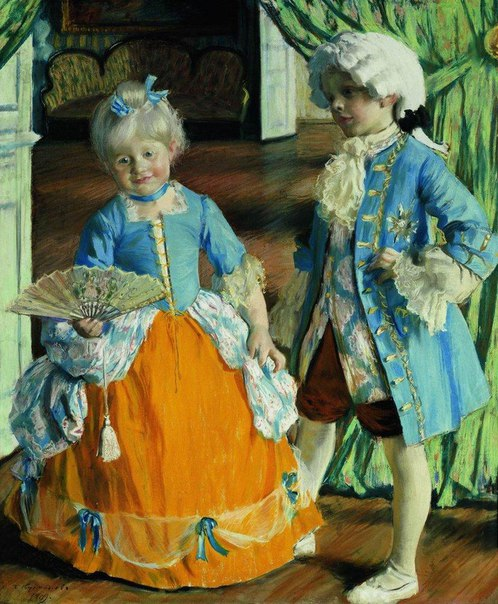

Юрист Екатерина Дубинина
В течение моего обучения на факультете права НИУ ВШЭ многие друзья и знакомые просили меня юридической помощи по различным вопросам Количество обращений стало неуклонно расти, и я задумалась о создании отдельной странички, где любой человек (и необязательно мой друг или знакомый) может ко мне обратиться, а также узнать полезную юридическую информацию. Работать по специальности я стала после 2 курса: начиная с небольшого юридического стартапа Alevs Group по страховым спорам и заканчивая работой в юридическом отделе компании Самсунг. Моя консультация всегда бесплатна. Если Вы обращаетесь ко мне, мой ответ Вас устраивает и у Вас все налаживается - я только рада. Однако, если Вам понадобится моя помощь дальше (в суде или в досудебном порядке) - мы с Вами договариваемся о цене, заключаем договор и я приступаю к работе. Иногда одного совета бывает достаточно для того, чтобы Вы пришли к нужному решению ваших проблем в семье. Но бывают ситуации, когда, увы, отношения накаляются и переходят в неразрешимый конфликт. И тогда, без юридических механизмов защиты ваших прав не обойтись. Именно на этом этапе важна грамотная юридическая поддержка. Со своей стороны я обещаю максимально грамотно помочь Вам в решении Ваших проблем в удобный для Вас срок.
При взаимном согласии на расторжение брака супругов, не имеющих общих несовершеннолетних детей, расторжение брака производится в органах записи актов гражданского состояния (ЗАГСе). В случае, если Вы твердо решили расторгнуть брак, а Ваша вторая половина уклоняется от совместного посещения ЗАГСа, а так же при наличии у Вас общих несовершеннолетних детей, то в таком случае расторжение брака производится в судебном порядке. Отметим, что именно наличие у супругов общих несовершеннолетних детей является наиболее распространенным основанием рассмотрения судами дел о расторжении брака. Рассмотрение дел о расторжении брака осуществляется судом в порядке гражданского судопроизводства. С иском в суд может обратиться один из супругов или опекун недееспособного супруга. Подсудность дел о расторжении брака и порядок подачи иска определяются по общим правилам ГПК РФ. Здесь сразу же отметим, что исковое заявление о расторжении брака подается в мировой суд, в случае, если отсутствует спор о том, с кем из родителей останется проживать несовершеннолетний ребенок.
С учетом материального или семейного положения сторон и иных заслуживающих внимания обстоятельств размер установленных в законе долей может быть уменьшен или увеличен. При наличии исключительных обстоятельств каждый из родителей может быть привлечен судом к несению дополнительных расходов, вызванных этими обстоятельствами. Дополнительные расходы определяются исключительно в твердой денежной сумме и взыскиваются ежемесячно. Для того, чтобы взыскать алименты на содержание своего несовершеннолетнего ребенка, Вам необходимо обратиться в мировой суд с заявлением о выдаче судебного приказа, либо в порядке искового производства взыскать алименты в твердой денежной сумме.
Раздел общего имущества супругов может быть произведен как в период брака, так и после его расторжения по требованию любого из супругов. Общее имущество супругов может быть разделено между супругами по их соглашению, заключенному в период брака или после его расторжения. При этом закон не указывает на обязательное оформление данного соглашения в виде брачного договора и его нотариальное удостоверение. Следует отметить, что в случае спора раздел общего имущества супругов, а также определение долей супругов в этом имуществе производятся в судебном порядке. В соответствии с действующим семейным законодательством, при разделе общего имущества супругов и определении долей в этом имуществе доли супругов признаются равными, если иное не предусмотрено договором между супругами. Отметим, что разделу подлежат также и долги (кредитные обязательства), возникшие в период брака. Так в частности если в период брака Вы оформили на себя кредит (например на ремонт дома), и после расторжения брака продолжаете его выплачивать единолично, то в таком случае, данное долговое обязательство можно признать в судебном порядке общим долгом супругов и обязать второго супруга, выплатить Вам 50% от общей суммы долга. 11 При необходимости, мы готовы оказать Вам комплекс юридических услуг по разделу имущества, приобретенного в период брака. Стоимость юридических услуг по ведению гражданского дела о разделе имущества, начинается от 7 000 рублей. В данную стоимость, входит следующий комплекс услуг: предварительная юридическая консультация; сбор необходимых документов; составление и отправка в суд искового заявления; представление интересов клиента в суде 1-й инстанции (не более 5-ти судебных заседаний); получение на руки вступившего в силу решения суда, а также получение исполнительного листа, для предъявления его ко взысканию. В стоимость услуг не входят: расходы по оплате госпошлины за рассмотрение искового заявления в суде.
Установление и оспаривание отцовства В соответствии с действующим законодательством, запись в книге рождений может быть изменена и оспорена только в судебном порядке, по требованию лица, записанного в качестве отца или матери либо лица, фактически являющегося отцом или матерью ребенка, а также самого ребенка по достижении им совершеннолетия, опекуна (попечителя) ребенка, опекуна родителя, признанного судом недееспособным. Дела об оспаривании отцовства рассматриваются в рамках искового производства. При рассмотрении дела об оспаривании отцовства фактическим отцом или матерью или другими лицами суд обязан привлечь к делу лицо, которое записано в качестве отца ребенка, так как в случае удовлетворения заявленных требований прежние сведения об отце должны быть исключены из актовой записи о рождении ребенка. В Семейном кодексе РФ установлены случаи, когда оспаривать отцовство нельзя. Так в частности нормы действующего семейного права запрещают оспаривать отцовство лицу, не состоявшему в браке с матерью ребенка на момент внесения записи о родителях ребенка в актовую книгу и знавшему, что он не является фактическим отцом ребенка. Следовательно, оспаривание отцовства может иметь место только в том случае, если судом будет установлено, что лицо в момент внесения записи об отцовстве не знало о том, что не является отцом ребенка.44 Следует иметь ввиду, что по данной категории дел, как правило назначается судебно-медицинская экспертиза. Стоимость юридических услуг по ведению гражданского дела об установлении и оспаривание отцовства начинается от 6 000 рублей. В данную стоимость, входит следующий комплекс услуг: предварительная юридическая консультация; сбор необходимых документов; составление и отправка в суд искового заявления; представление интересов клиента в суде 1-й инстанции (не более 3-трех судебных заседаний); получение на руки вступившего в силу решения суда, а также предъявление решения суда в ЗАГС, для внесения изменений в книгу актов гражданского состояния. В стоимость услуг не входят расходы (издержки) по оплате госпошлины, за рассмотрение искового заявления; расходы по оплате судебно-медицинской экспертизы. 